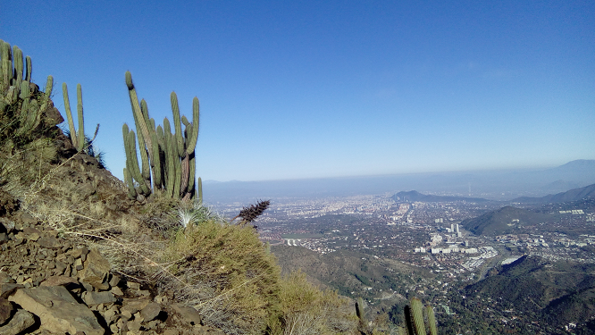
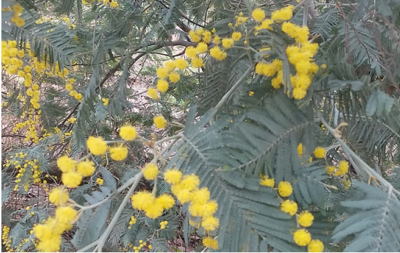

Trekking
Caminar, descubrir nuevos lugares y disfrutar del camino. Una colección de algunas de mis rutas y momentos favoritos.

Cerro Pochoco
📍 Lugar · 2025 · 9 fotografías
Ver álbum

Parque Metropolitano
📍 Lugar · 2024 · 15 fotografías
Parque Metropolitano para todos.
Ver álbum
-->